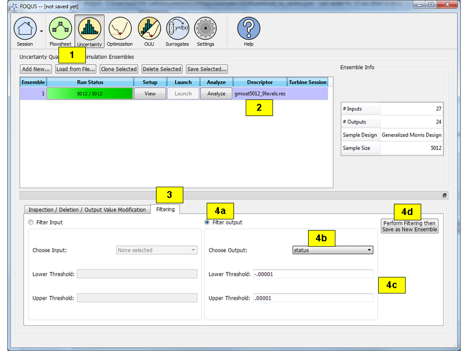

Data Manipulation¶
In this tutorial, instructions to change the data before analysis are described. Current capabilities include sample filtering, input/output variable deletion, and output value modification.
Filtering¶
Filtering involves selecting out samples whose values of a certain input or output fall into a certain range. Typically, when runs are returned from the Turbine gateway, there could be simulations that failed to converge in Aspen, thus the simulation samples corresponding to these failed runs should be excluded from analysis. Follow the steps below to filter out the samples due to failed runs:
Click Load from File on the UQ window (Figure[fig:uqt_data_filter]).
Data Manipulation, Filtering Tab
[fig:uqt_data_filter]
Select the file “gmoat5012_9levels.res” in the examplesUQ folder. This file is an actual simulation ensemble that has already been run on the Turbine gateway. To find this file, the user may need to change the file filter to “All files.”
Select the Filtering tab.
Next, filtering the loaded simulation ensemble based on output values is performed. In particular, the user should keep only the samples in which the output parameter status is “0.”
- Select Filter Output.
- Select “status” from the Choose Output drop-down list.
- Enter -.00001 and .00001 as Lower Threshold and Upper Threshold respectively, and then click return within “Lower threshold” and “Upper threshold.”
- Click Perform Filtering then Save as New Ensemble.
Once filtering is complete, a new row should be added to the simulation table (Figure [fig:uqt_data_filter_results]). This ensemble contains only those samples that have a status value of “0.” Analysis can now be performed on this new ensemble because this ensemble contains only the valid simulations (i.e., those with output status value of 0), in which Aspen calculations have properly converged.
Data Manipulation, Filtering Results
[fig:uqt_data_filter_results]
Variable Deletion¶
If an input or output variable is to be removed from consideration for analysis, this can be done in the Inspection/Deletion/Output Value Modification tab. Delete the status output from the previous filtering as it is no longer needed for further analysis.
- Verify that the ensemble that resulted from filtering is selected. If not, select that ensemble.
- Click the Inspection/Deletion/Output Modification tab.
- Scroll to the right of the table to the outputs, which are colored yellow.
- Select the checkbox corresponding to the “status” output (the first output).
- Click Perform Deletion then Save as New Ensemble.
The results are illustrated in Figure [fig:uqt_data_mod]. Note: The output count has decreased by one for the new ensemble. The user can verify that the “status” output was removed in the new ensemble by viewing this in the Inspection/Deletion/Output Value Modification tab again. Deletion of an input can be performed similarly by selecting its checkbox and clicking the Perform Deletion then Save as New Ensemble button.

Data Manipulation, Inspection/Deletion
[fig:uqt_data_mod]
Output Value Modification¶
To change the value of an output for a sample or several samples, follow steps below:
- Select an ensemble.
- Click the Inspection/Deletion/Output Value Modification tab.
- Scroll to the right to the outputs.
- Click on a cell for one of the outputs and enter a new value. Do the same for another cell. Notice that the modified cells turn green. This indicates the cells that have been modified.
- Click Make Output Value Changes Permanent to permanently change the values. The modified cells will turn yellow, indicating the permanent change. If the user wishes to reset the table and start over before making changes permanent, click the Reset Table.

Data Manipulation, Value Modification
[fig:uqt_data_mod_output]